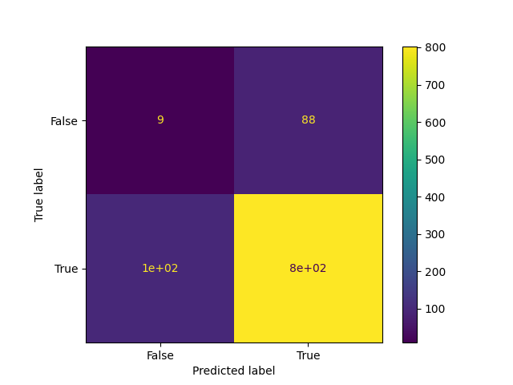

Confusion Matrix
It is a table that is used in classification problems to assess where errors in the model were made.
The rows represent the actual classes the outcomes should have been. While the columns represent the predictions we have made. Using this table it is easy to see which predictions are wrong.
Creating a Confusion Matrix
Confusion matrixes can be created by predictions made from a logistic regression.
For now we will generate actual and predicted values by utilizing NumPy:
import numpy
actual = numpy.random.binomial(1, 0.9, size = 1000)
predicted = numpy.random.binomial(1, 0.9, size = 1000)
from sklearn import metrics
confusion_matrix = metrics.confusion_matrix(actual, predicted)
cm_display = metrics.ConfusionMatrixDisplay(confusion_matrix = confusion_matrix, display_labels = [False, True])
import matplotlib.pyplot as plt
cm_display.plot()
plt.show()
Example
import matplotlib.pyplot as plt
import numpy
from sklearn import metrics
actual = numpy.random.binomial(1,.9,size = 1000)
predicted = numpy.random.binomial(1,.9,size = 1000)
confusion_matrix = metrics.confusion_matrix(actual, predicted)
cm_display = metrics.ConfusionMatrixDisplay(confusion_matrix = confusion_matrix, display_labels = [False, True])
cm_display.plot()
plt.show()
Result 
Results Explained
The Confusion Matrix created has four different quadrants:
- False Negative (Top-Left Quadrant)
- False Positive (Top-Right Quadrant)
- True Negative (Bottom-Left Quadrant)
- True Positive (Bottom-Right Quadrant)
- True means that the values were accurately predicted, False means that there was an error or wrong prediction.
Now that we have made a Confusion Matrix, we can calculate different measures to quantify the quality of the model. First, lets look at Accuracy.
Created Metrics
The matrix provides us with many useful metrics that help us to evaluate out classification model.
The different measures include: Accuracy, Precision, Sensitivity (Recall), Specificity, and the F-score, explained below.
Accuracy
Accuracy measures how often the model is correct.
How to Calculate
(True Positive + True Negative) / Total Predictions
Example:
Accuracy = metrics.accuracy_score(actual, predicted)
Precision
Of the positives predicted, what percentage is truly positive?
How to Calculate
True Positive / (True Positive + False Positive)
Precision does not evaluate the correctly predicted negative cases:
Example:
Precision = metrics.precision_score(actual, predicted)
Sensitivity (Recall)
Of all the positive cases, what percentage are predicted positive?
Sensitivity (sometimes called Recall) measures how good the model is at predicting positives.
This means it looks at true positives and false negatives (which are positives that have been incorrectly predicted as negative).
How to Calculate
True Positive / (True Positive + False Negative)
Sensitivity is good at understanding how well the model predicts something is positive:
Example:
Sensitivity_recall = metrics.recall_score(actual, predicted)
Specificity
How well the model is at prediciting negative results?
Specificity is similar to sensitivity, but looks at it from the persepctive of negative results.
How to Calculate
True Negative / (True Negative + False Positive)
Since it is just the opposite of Recall, we use the recall_score function, taking the opposite position label:
Example:
Specificity = metrics.recall_score(actual, predicted, pos_label=0)
F-score
F-score is the "harmonic mean" of precision and sensitivity.
It considers both false positive and false negative cases and is good for imbalanced datasets.
How to Calculate
2 * ((Precision * Sensitivity) / (Precision + Sensitivity))
This score does not take into consideration the True Negative values:
Example:
F1_score = metrics.f1_score(actual, predicted)
All calulations in one:
Example:
#metrics
print({"Accuracy":Accuracy,"Precision":Precision,"Sensitivity_recall":Sensitivity_recall,"Specificity":Specificity,"F1_score":F1_score})